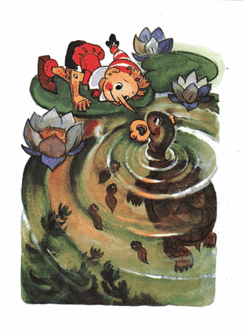

Jangan lupa, Buratino itu kayu sehingga dia tidak akan tenggelam. Tapi bagaimanapun dia sangat syok, cukup lama dia terapung di air, berlumuran lumut hijau.
Di sekelilingnya berkerumun para penduduk rawa, yang terkenal karena kebodohan mereka; ada berudu-berudu buncit hitam, kumbang-kumbang air berkaki dua, yang mirip dayung, lintah-lintah, larva-larva, yang memakan apa pun yang mereka temukan, yang menghampiri mereka, dan, yang terakhir, beraneka ragam infusoria kecil.
Segerombolan berudu menggelitiki dia dengan moncong-moncong mereka yang tumpul, dan dengan riang mengunyah-ngunyah rumbai-rumbai pada kupluknya. Lintah-lintah merayap ke dalam saku jaketnya. Seekor kumbang air memanjat-manjat batang hidungnya, yang mencuat tinggi di permukaan air, dan dari atas sana dia terjun ke air menukik; seperti burung layang-layang.
Infusoria-infusoria kecil, bergelinjang berseok-seok, tergesa-gesa menggerak-gerakkan bulu mereka, yang berfungsi sebagai tangan dan kaki, berusaha mendapatkan apa pun yang bisa dimakan, tetapi dengan sendirinya mereka masuk ke dalam mulut kumbang air.
Buratino akhirnya muak, dia menendang-nendangkan kakinya di air.
- Bubar, bubar! Aku bukan bangkai kucing.
Para penduduk rawa terhempas ke segala arah. Dia balik tengkurap lalu berenang.

Di atas daun bundar bunga teratai-air diterpa cahaya rembulan, jongkok tiga ekor katak bermulut lebar. Mata belo mereka melendung mengamati Buratino.
- Seekor sotong berenang... /korek yang satu/
- Hidungnya seperti bangau... /korek yang lain/
- Itu katak laut... /korek yang ketiga/
Buratino merangkak naik ke atas daun lebar bunga teratai itu, untuk beristirahat, dia terduduk, mendekap erat kedua lututnya dan berkata, giginya gemetar:
- Semua anak laki-laki dan perempuan sedang mabuk susu, tidur nyenyak di kasur hangat, hanya aku sendiri terduduk di atas daun basah... Beri aku sesuatu untuk dimakan, wahai katak.
Katak memang dikenal berdarah dingin. Namun jangan kira mereka tidak punya hati. Ketika Buratino, dengan giginya yang gemetar, menceritakan tentang petualangan sial-nya, katak-katak itu terjun satu persatu, mengibas-ngibas kaki belakang mereka dan menyelam sampai ke dasar.
Dari sana mereka membawakan bangkai kumbang, sayap capung, sepotong lumpur, beberapa butir telur keong dan beberapa akar busuk.
Setelah menyajikan semua yang dapat dimakan itu di hadapan Buratino, katak-katak itu hinggap kembali ke daun teratai dan berjongkok seperti batu; kepala besar mulut lebar mata belo mereka menengadah.
Buratino mengendus, mencicipi sajian katak-katak itu.
- Ah aku mual, /dia bilang/ betapa menjijikkan!
Tiba-tiba katak-katak itu 'secara serentak' kembali berhamburan ke dalam air.
Lumut hijau di permukaan rawa menyembul-nyembul, lalu munculah kepala ular besar mengerikan, ia berenang ke arah daun teratai, di mana Buratino terduduk.
Rumbai-rumbai di atas kupluknya berdiri tegang. Dia nyaris terjungkal ke air karena kaget.
Ternyata itu bukan ular, tidak ada yang perlu takut, pada si penyu tua Tortilla bermata petet.
- Ah kau, otak udang, dasar bocah polos berpikiran dangkal! /kata Tortilla/ Diam di rumahmu, belajar dengan rajin! Malah terjerumus ke Negeri Idiot!
- Aku hanya ingin mendapatkan lebih banyak koin emas untuk papa Carlo... Aku anak yang saaangat baik nan bijaksana...
- Uangmu dicuri oleh si kucing dan si rubah /kata penyu itu/ Mereka berlari melewati rawa ini, singgah untuk minum, lalu kudengar mereka meyombongkan diri, bagaimana mereka menggali uangmu, dan bagaimana mereka berkelahi gara-gara uang itu... Oh kau, dasar otak udang, si idiot polos berpikiran dangkal!..
- Tak usah ngomel! /gerutu Buratino/ seseorang disini butuh pertolongan... Apa yang mesti kulakukan sekarang?.. Oy-oy-oy!.. Bagaimana nantinya jika aku pulang ke papa Carlo?.. Ay-ay-ay!..
Dia ngucek-ucek matanya dengan tinjunya dan merengek begitu menyedihkan, sehingga katak-katak itu serentak menghela nafas:
- Uh-uh... Tortilla, tolonglah manusia itu...
Penyu itu termenung menatap rembulan, mengingat sesuatu...
- Suatu kali aku pernah menolong manusia, tapi kemudian dia menjadikan kakek dan nenek-ku menjadi sisir penyu /katanya, dan sekali lagi termenung menatap rembulan/ Ya sudah, tunggu di sini, wahai manusia, biar aku menyelam sampai dasar, siapa tahu kutemukan sesuatu yang berguna untukmu.
Ia menarik kepala-ular-nya dan perlahan tenggelam ke dalam air.
Katak-katak berbisik:
- Si penyu Tortilla mengetahui sebuah rahasia besar.
Waktu berlalu begitu lama.
Sang rembulan tenggelam di balik bebukitan...
Lumut hijau menyembul-nyembul lagi, si penyu telah tiba, di mulutnya ia membawa sebuah kunci emas berukuran kecil.
Ia letakkan di atas daun di kaki Buratino.
- Nih, otak udang, si idiot polos berpikiran dangkal. /kata Tortila/ Jangan bersedih sebab si kucing dan si rubah sudah terlanjur mencuri koin emas-mu. Kuberikan kunci ini padamu. Kunci ini terjatuh ke dasar rawa ini oleh seorang pria berjenggot yang saking panjangnya, dia selipkan ke sakunya agar tidak mengganggu saat berjalan. Ah, betapa dia memohon kepadaku untuk menyelam ke dasar untuk mencarikan kunci ini!..
Tortilla menghela, menahan, lalu membuang nafas panjang, sehingga airnya bergelembung meletup-letup...
- Tapi aku tidak menolongnya, waktu itu aku sangat benci pada manusia karena telah memburu kakek dan nenekku untuk dijadikan sisir penyu. Manusia berjenggot itu menerangkan banyak hal tentang kunci ini, tapi aku sudah melupakan segalanya. Yang kuingat hanya, dia membutuhkan kunci ini untuk mebuka sebuah pintu dan pintu itu akan mengantarkan menuju kebahagiaan...
Jantung Buratino berdebar-debar, matanya berbinar-binar. Seketika dia lupa dengan semua kesialan yang menimpanya. Dia keluarkan lintah-lintah dari saku jaketnya, dia masukkan kuncinya ke situ, dengan santun berterima kasih kepada Tortilla dan katak-katak itu, lalu mencebur ke air berenang ke tepian.
Begitu dia sampai di gelapnya bayang-bayang di tepi rawa, katak-katak itu mengorek-ngorek dari belakang:
- Buratino, kuncinya jangan sampai hilang!